Basicamente as tags HTML possuem em sua grande maioria, a tag de abertura e de fechamento, a de abertura possui um sinal de menor ao lado esquerdo, em seguida temos o nome da tag no centro e por fim temos ao lado direito o sinal de maior, por outro lado, a tag de fechamento possui uma diferença de possuir uma barra "/" próxima ao sinal de menor.
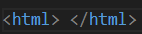A tag Head é representada pela cabeça ou cabeçalho do código, ela será responsável por indicar o conteúdo antes ao usuário, dentro dele podemos encontrar a tag title, que permite dar um nome para a página.
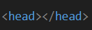A tag body representa o corpo
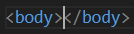A tag i transforma o texto em itálico
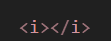A tag body transforma o texto em negrito
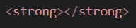A tag sub é usada para adicionar um texto subscrito ao documento HTML
10 1
A tag sub é usada para adicionar um texto sobrescrito ao documento HTML
10 1
Essa tag não está funcionando, mas ela funcionava para alterar a fonte das palavras, portanto hoje se utiliza o CSS
Essa tag exibe um texto ao passar o mouse em cima de uma abreviação
HTML
Dessa forma será possível deixar o “text” em itálico e em negrito
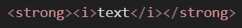Como citado anteriormente algumas tags não possuem a tag de fechamento como o input e o img
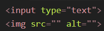A tag input é responsável por inserir um campo para digitar um texto em específico, além disso ele possui atributos que podem mudar o que será inserido.
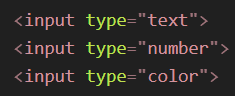Assim como o input, outras tags também possuem seus atributos, assim como o famoso atributo de “ID”, que funciona como um identificador, além disso também temos o “class” e o “style” que fazem parte do CSS, para manipular elementos em conjunto utilizamos o class, já o style utilizamos para estilizar.
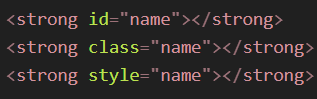Alguns atributos da tag img podem ser utilizados para adionar uma imagem utilizando algum caminho como um diretório de alguma pasta ou alguma url, também é possível redimensionar o tamanho da imagem utilizando width entre outros…
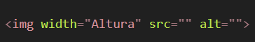Entre uma das principais utilizadas, temos os H(s), estes são utilizadas na forma de títulos, eles variam de tamanho de h1 até h6.
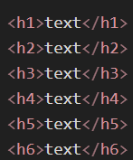Tag tipo p são utilizadas para fazermos parágrafos
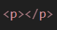Essa tag te permite fazer uma espécie de citação
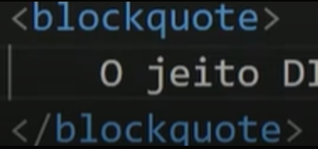A lista ordenada nós utilizamos a tag “ol”, dentro de sua estrutura temos que colocar tags “li” dentro de sua estrutura, dessa forma ao rodar o código, será exibido uma lista númerada.
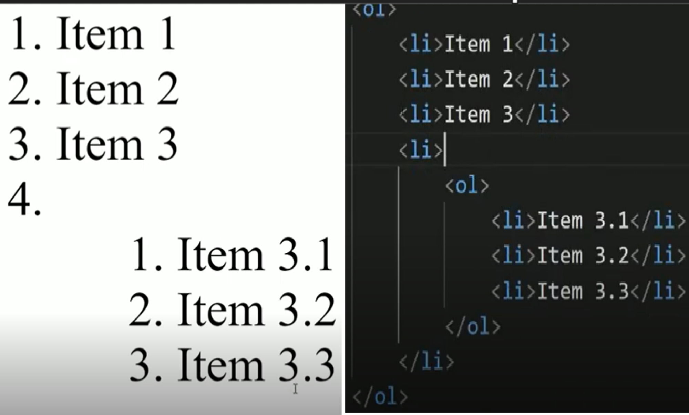A lista não ordenada nós utilizamos a tag “ul”, dentro de sua estrutura e da mesma forma temos que colocar tags “li” dentro de sua estrutura, dessa forma ao rodar o código, será exibido uma lista com asteristicos.
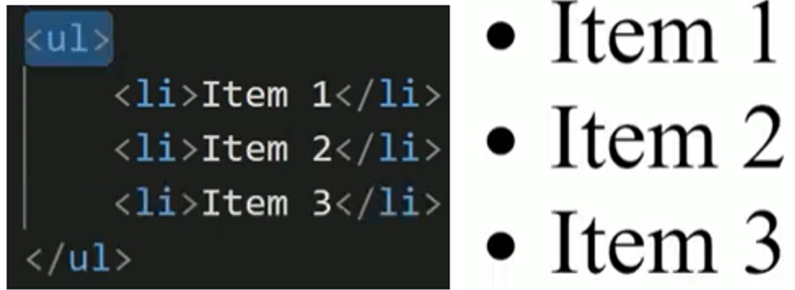Para fazermos links para alternar de um local para outro nós utilizamos a tag “a”, essa tag significa âncora
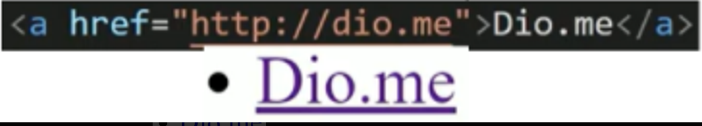Ao passarmos o mouse em cima do Dio.me no navegador, podemos visualizar também o link que você será redirecionado se clicar nele.
Ao clicarmos nesse link, podemos perceber que ele abrirá essa link na mesma aba, podemos modificar essa função de forma que ele possa abrir em uma aba separada utilizando o target. Existem duas opções mais utilizadas que podemos utilizar, a primeira delas é o “_self” que basicamente é o padrão já definido, ou seja, ele é o que abrirá o link na mesma aba. Já o “_blank” fará com que seja criada outra aba separada.
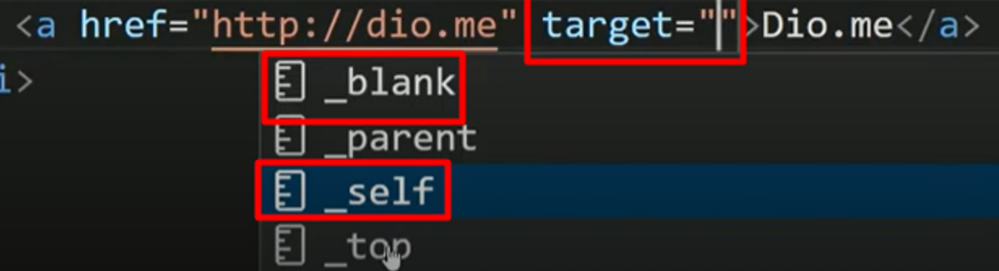Outro atributo interessante é o “title”, que é possível inserirmos um texto que poderá ser visualizado ao usuário passar o mouse sobre o link, gerando assim um balão com texto.
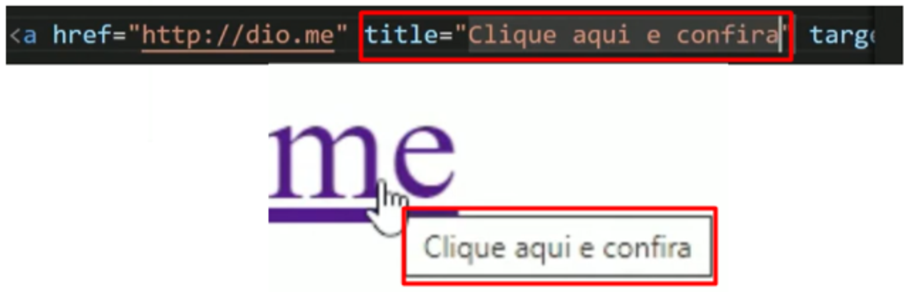Para alternarmos de uma página para outra no nosso próprio site, será necessário criarmos um outro arquivo HTML em nosso VSCODE, portando criaremos um arquivo chamado “about.html”, que também irá conter toda a estrutura HTML
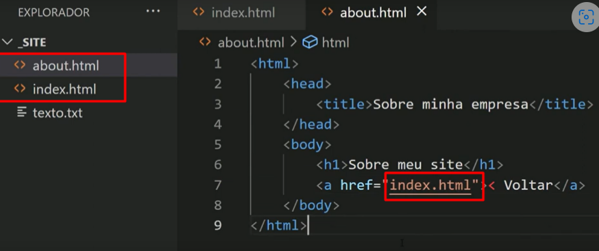Agora temos duas páginas, a página principal é identificado como “index.HTML” e a outra página que queremos alternar será chamado de “about.HTML”
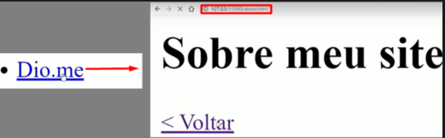Podemos reparar que podemos navegar de uma página para outra apenas clicando em seu respectivo link, clicando no link Dio.me seremos redirecionado para o link que contém o “about.html”, mas também se clicarmos retornaremos a página anterior situada como “index.HTML”
Podemos utilizar a ancoragem para direcionar o usuário em um campo da página sem ter que sair dela apenas utilizamos o “#”, dessa maneira como mostra o exemplo ao lado, na tag h2 é criado um id com nome “surgimento” e esse id será referenciado na tag como #surgimento.
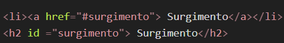